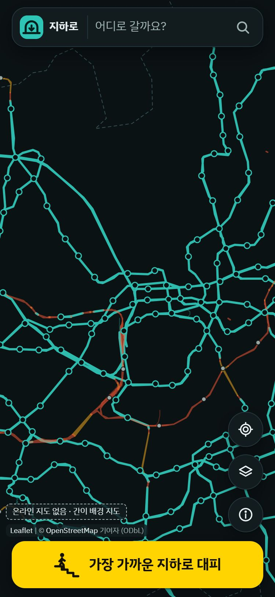
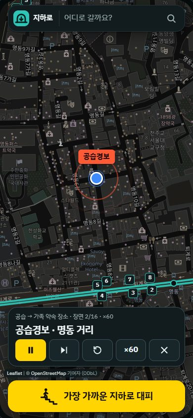
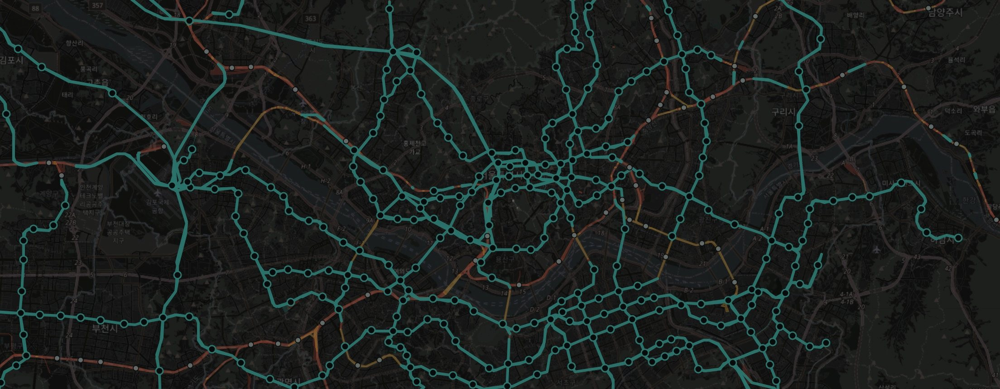
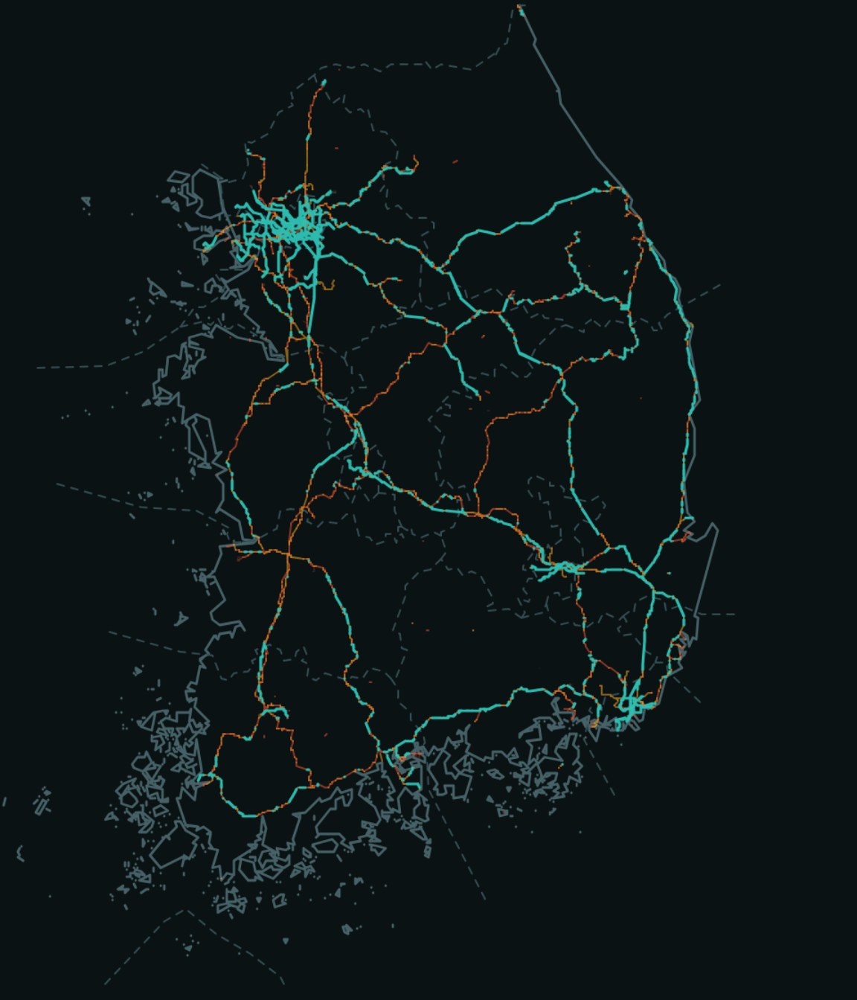
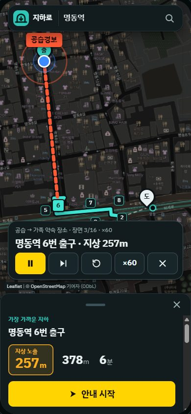
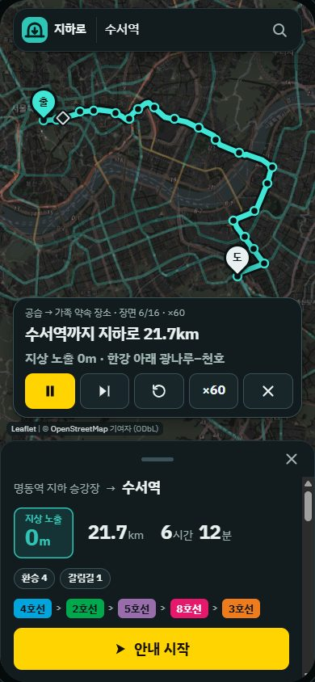
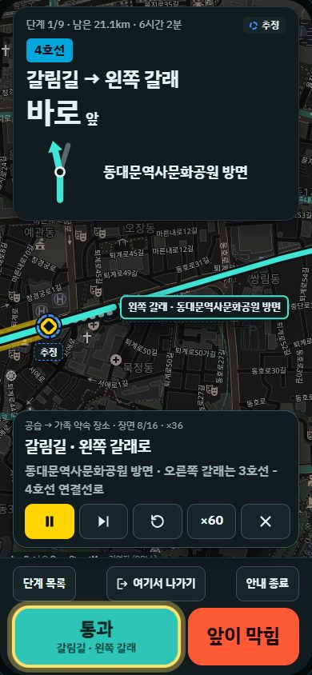
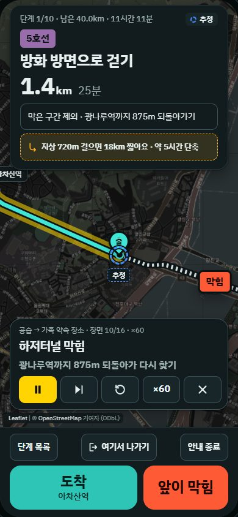
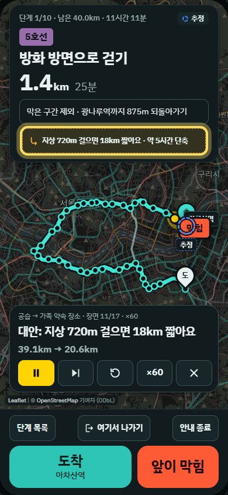
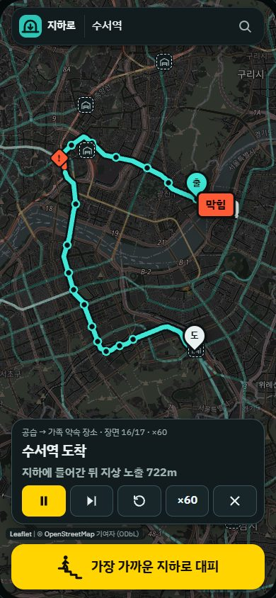

지하로
공습 때 지상에 나가는 거리가 가장 짧은 길을
전국 철도 터널로 찾아 안내하는 웹 앱

공습경보가 울리면
행동요령은
‘가장 가까운 지하로’
- 지도 앱 경로는 어느 구간이 터널인지 쓰지 않는다
출처: 대한민국 정책브리핑, 영등포구청, 국민재난안전포털 행동요령

서울에서 한강을 지하로만 건너는 길은
5호선 하저터널 두 곳뿐이다

양쪽 강변 모두 지하로 이어짐
한쪽 강변에서 지상으로 나옴

전국 역 1,275곳
© OpenStreetMap contributors
시연 길에서 두 곳을 다 막으면 가장 나은 길도 지상 721m · 한강 철도 횡단 12곳 중 교량 7곳, 하저터널 5곳
지하로는 지상 1m를 지하 1km만큼 비싸게 계산해
지상에 나가는 거리가 가장 짧은 길을 찾는다
시연명동 → 수서
명동 거리 → 수서역: 지상은 첫 출구까지 257m

명동역 6번 출구
지상 257m
수서역까지 21.7km
지상 0m
충무로 지나 선로 갈림길
왼쪽 갈래로 통과
광나루–천호 막힘
광나루역까지 875m
대안: 지상 720m 걸으면 18km 짧아요
39.1km → 20.6km
수서역 도착
지하에 들어간 뒤 지상 722m
시연: cy7mvpboy.github.io/underground-route/stage/ · 17장면, ×60에서 약 2분
어려웠던 것 1
tunnel 태그가 있는 선로만 지하로 본다
def classify(tags):
t, b = tags.get("tunnel"), tags.get("bridge")
if t and t != "no":
return "tunnel"
if b and b != "no":
return "bridge"
return "ground" # layer<0, covered=yes도 지상으로 둔다layer<0은 지하로 치지 않는다
경부선 금정~수원 약 16km는 OSM에서 layer=-1이지만 실제로는 지상이다
경인일보: 금정~군포~당정 4.84km 지상 운행 (docs/data-check.md 4.4절)
어려웠던 것 2
비용 = 길이 × 가중치
지하 1지상·교량 1000
for (let e = 0; e < nEdges; e++)
weight[e] = under.has(E.s[e]) ? g.weights.under : g.weights.exposed;if (ei >= noWalk || (blocked && blocked.has(ei))) continue;
const w = adjNode[k];
const nc = c + len[ei] * weight[ei];
if (nc < cost[w]) { cost[w] = nc; prevEdge[w] = ei; prevNode[w] = v; heap.push(nc, w); }앞이 막힘은 그 간선을 blocked에 넣고 같은 탐색을 다시 부른다
서버 없이 폰에서 3.2MB 그래프로 경로를 계산한다
터널 안 위치는 걸음 수와 보폭으로 추정한다.
브라우저 경로는 Node 검사 14개와 Python 기준 구현 비교로 확인했다.
지금 열어서 홈 화면에 추가해 두면
인터넷이 끊겨도 열린다
cy7mvpboy.github.io/underground-route/
GitHubgithub.com/cy7mvpboy/underground-route
- 되는 것전국 역 1,275곳 사이 지하 우선 경로, 터널 안 안내, 인터넷 없이 다시 열기
- 안 되는 것실시간 피해 정보. 막힌 곳은 사용자가 ‘앞이 막힘’으로 알린다
평시에는 철도 터널에 들어가면 안 된다